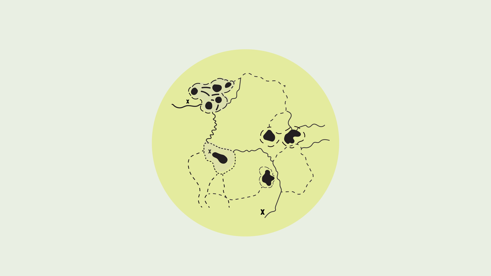

관리자 모드 · 로그아웃
📍 좌표 확인 모드 — 클릭하면 복사

✎ 클릭하여 편집
×
✎ 수정하기
×
새 메모
날짜
제목
내용
사진
+ 이미지 업로드
추가
소리
추가
공개 여부
방문자에게 공개
취소
저장
×
타이틀 카드 수정
주제목 (굵게)
부제목 (작은 글씨)
취소
저장
×
관리자 로그인
비밀번호를 입력하면
편집 모드가 활성화됩니다.
취소
확인
+
−
⌂
배경 전환
좌표 확인
내보내기
저장소 초기화
드래그 · 스크롤로 탐색
•